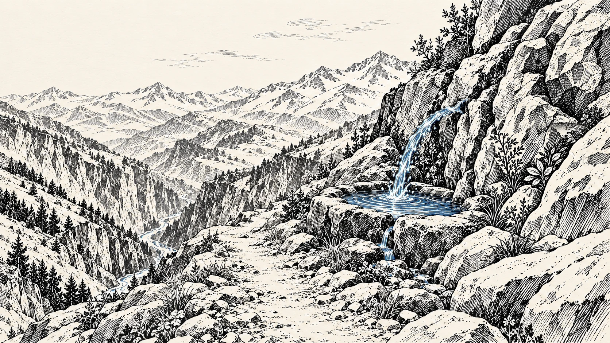
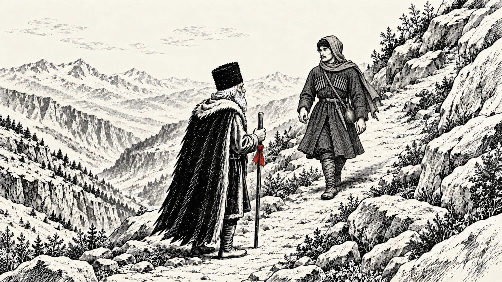
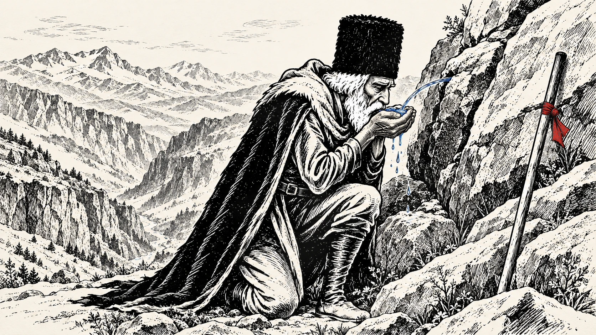
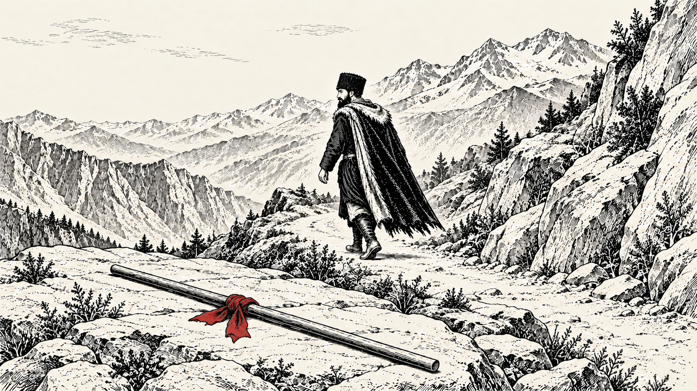
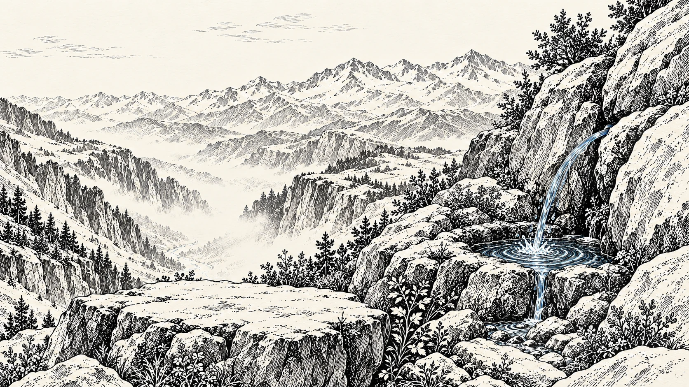

Он поднимался к источнику,
как поднимались до него.

Навстречу шёл тот,
кто уже побывал у источника.

Вода была холодной.
Такой, что возвращала лёгкость.

Палка осталась на камне.
Вниз он шёл налегке.

АЗАУ.
Пей и иди легче.
Чистое золото Эльбруса
Вода из горного источника. Пьёшь — и путь становится легче.
ПОПРОБОВАТЬ ЛЁГКОСТЬ- Из горного источника
- Чистый вкус
- Лёгкость в каждом глотке